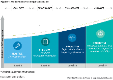
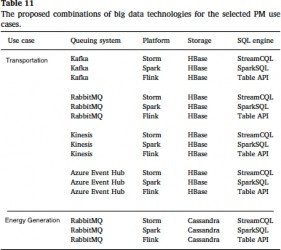

We will briefly discuss Industry 4.0 and walk through the requirements for two Predictive Maintenance 4.0 use cases
We will systematically examine a subset of the existing technologies (open source and otherwise) and their features around big data stream processing
We will establish their fitness for Industry 4.0 use cases in general with a focus on predictive maintenance
We will map predictive maintenance requirements to the capabilities of these big data streaming technologies
We will propose optimal combinations of open-source big data technologies and a reference architecture for selected use cases
We will walk through a candidate implementation aligned with that architecture
Industry 4.0 is the new catchall term for the fourth industrial revolution. It pushes for a new, global industrialization paradigm comprising of digitally enabled, data driven, continuous, intelligent, autonomous and decentralized control of industrial manufacturing systems. Common key business objectives for Industry 4.0 applications are
Maximize uptime throughout the production chain to react rapidly to varying demand (Demand Driven Production)
Maximize productivity while simultaneously reducing production cost (minimize NPT and minimize cost)
With the explosive arrival of the data-driven economy, industrial enterprises are adopting big data techniques en masse to achieve these business objectives. Streaming big data and IoT technologies play a pivotal role in building these next generation data-oriented Industry 4.0 applications.
The relevant areas of Industry 4.0 that are key to a data technology perspective are:
Cyber Physical Systems (CPS)
Industrial Internet of Things (IIoT)
Industrial Cloud Platforms, Applications, Solutions & Decentralized Services
Big Data & Stream Processing technologies for processing large amounts of production data in real time.
Industry 4.0 use cases fall roughly into the following three areas, namely:
Industrial Products
Intelligent Industrial Processes
Intelligent Industrial Machines.
For Industrial products (physical), intelligent industry 4.0 applications manage all necessary information about the industrial products and the production processes conducted on them. (Re: Digital Twins). Intelligent Industrial processes focus on the results and consequences of product creation, including asset information management. Intelligent Industrial machine scenarios focus on industrial machinery performance and applications such as predicting breakdowns, detecting any quality issues, and the need for conducting preemptive maintenance.
The most prominent use case for intelligent machines is predictive maintenance (often referred to as PM or PM 4.0).

PM applications must predict events of maintenance interest viz., failures sufficiently ahead of time so that maintenance decision makers can take appropriate actions such as maintenance, replacement or even a planned shutdown. These applications must facilitate savings on machine maintenance and increase productivity by ensuring the maximum uptime of machines. Most industrial manufacturing processes follow assembly line/flow-based production principles and thus, any failure in the assembly line results in a domino effect, making it crucial to avoid any single points of failure. By deploying loosely coupled, flow oriented predictive maintenance solutions, these failures can be anticipated and hence avoided or at least reduced. For the most accurate and optimal prediction, it is of the utmost importance to collect and analyze large amounts of relevant data within a very short time frame. Thus, big data analytics and stream processing technologies are a key requirement for predictive maintenance solutions.
Fig 1. Big Data Analysis for Predictive Maintenance
Predictive maintenance applications are one of the most crucial, data-driven analytical applications for large-scale manufacturing industries. Considering use cases in the area of predictive maintenance, we identify the requirements for a big data processing pipeline in the different phases of data processing such as data collection, analytics, querying, and storage.
PM requirements map to the capabilities of four categories of open-source technologies:
Data Collection: Particularly, Distributed Queue Management
Data Analysis: Particularly, Big data stream processing platforms
Data Storage: Particularly, Big data storage technologies
Data Querying: Particularly, Streaming SQL engines.
Fig. 2. A brief summarization of Open-source big data streaming analysis technology categories
Distributed queuing management technologies (e.g. Apache Kafka, RabbitMQ, Amazon Kinesis, Microsoft Event Hubs and Google Pub/Sub) allow producers (i.e., data producers such as sensors) to push a high volume of messages to a queue and allow consumers (i.e., Industry 4.0 applications) to pull messages from the queue in real time with scalability and fault tolerance capabilities.
Big data stream processing platforms (e.g., Apache Storm, Apache Samza, and Apache Flink) handle distributed streams and batch data processing.
Big data storage technologies including column-based storage (e.g., Cassandra, HBase), document stores (e.g., MongoDB) and Hadoop based frameworks (e.g., Hive) are open-source technologies for storing, querying and analyzing large data sets.
Streaming SQL engines are query languages that extend SQL with the ability to process real-time data streams (e.g., Spark SQL, Flink Table API, KSQL, SamzaSQL, StormCQL, etc.).
Three key questions that architects face around Big Data Analytics and Stream Processing (for Predictive Maintenance) are:
What are the capabilities of the available big data and streaming data analysis technologies (open source or otherwise) for PM?
What are the technical requirements for building data analytics pipelines focused on predictive maintenance use cases?
How do we
Extract technical requirements from the functional use cases/user stories
Map those technical requirements onto existing/available big data technologies (open-source or otherwise)
Provide clear guidelines, guardrails & governance policies around target architecture(s) based on the mapping
Collectively arrive at a consensus engineering blueprint to drive iterative, incremental agile development
Manufacturing companies are now combining data from different collaborative systems to achieve higher productivity in the design, production, and delivery of products. They also have built smart factories which are capable of handling big data from myriad different sources, e.g., instruments, sensors, internet transactions, CAD models, and digital records to enable intelligent, optimal real-time control of multiple elements in the production process. Manufacturing data analytics is clearly a “Big Data” problem with massive Volume, Variety, Velocity, Veracity and Value challenges (and opportunities).
Fig. 3. Big data Characteristics to consider
Sound understanding of the strengths and weaknesses of the state-of-the-art big data processing technologies is necessary to truly realize fully automated large- scale manufacturing systems. We will focus on the four key technology blocks identified earlier namely:
Distributed queue management
Big data stream processing platforms
Big data storage
Streaming SQL engines Distributed queue management Overview
Distributed queuing technologies such as Kafka, RabbitMQ, Amazon Kinesis, Microsoft Event Hubs and Google Pub/Sub have matured in the last few years to support publish/subscribe messaging. These technologies have added many useful new capabilities to provide solutions for moving large-scale data around for real- time applications. While distributed queuing management technologies may seem very similar to traditional message queuing technologies, they differ significantly in their architecture and therefore have very different performance and behavioral characteristics. For example, traditional queuing systems typically remove processed messages from the queue and cannot scale out with multiple consumers taking multiple independent actions on the same event. In contrast, distributed queuing technologies are suitable for both offline and online message consumption by supporting a group of consumers and preventing data loss by using persistent disks over replicated clusters. The messages are persisted immediately to the distributed queues to guarantee the delivery of messages for a period of time. In particular, each distributed queuing management technology shards its topics (i.e., a topic is where data (messages) gets published by a producer and will be pulled by consumer(s)) into one or more partitions. Then, each consumer group consumes the messages of a given topic (its partitions) where each partition
cannot be consumed by more than one consumer of the same consumer group. The consumer groups feature is very important to perform re-balancing whenever partitions and/or consumers change.
The table below shows a number of aspects that should be considered when choosing a distributed queuing technology. These include:
Messaging guarantee
Ordering guarantee
Consumer groups
Disaster recovery,
Replication
Federation (i.e., providing a way of balancing the load of a single queue across nodes or clusters)
Supported query languages.
Three types of configurations are key:
At most once: some messages may be lost, and no message is delivered more than once
Precisely once: each message is guaranteed to be delivered once only, not more or less
At least once: each message is guaranteed to be delivered but may in some cases be delivered multiple times
None: No guarantee of any incoming message ordering
Within a partition: guarantee order within any given partition, but across partitions, the messages may be out of order.
Across partitions: guarantee order across all partitions which slows things down and is expensive to scale but may be required in distributed transaction situations
Within AMQP channel: guarantee order by using the Advanced Message Queuing Protocol (AMQP) channel which is used for message-oriented middleware to support sending and receiving messages between distributed systems
Within a shard: guarantee order within a shard, where sharding is a method to distribute data/messages across multiple different servers to increase the scalability of distributed queuing systems.
This feature provides a mechanism for balancing the load of a single queue across several nodes or clusters to support migration among clusters without stopping all producers and consumers. Federation features are necessary for most data driven applications, particularly, for applications that aggregate data, extract information & insights from disparate data sources and make it accessible to data consumers as an integrated data store. Many data sources within big data applications in different companies, including finance, healthcare and manufacturing, produce large sequences of events or measurements (time-series). Such data needs to be captured and analyzed in real time to provide insights that drive decision making with minimal delay. Consequently, distributed queuing management technologies have been adopted to collect large amounts of streaming data, feeding it to real-time systems.
Over the years, traditional relational database management systems and more recently batch processing technologies, such as Hadoop and Spark have been used to manage and analyze data. These technologies are mature and well-suited for a broad range of applications but are not ideal for building real-time applications. A new set of technologies have been introduced which are capable of handling large amounts of streaming data, processing and analyzing it on the fly to meet the needs of real-time applications viz., Apache Storm Apache Samza and Apache Flink. They focus on the streaming construct to address real-time analytics, streaming
analytics, Complex Event Processing and online learning usecases. They allow organizations to build real-time solutions using IoT and extract information from their big data sources to derive insights from millions of events in minimal time.
Apache Hadoop is inspired by Google's MapReduce design which is based on batch processing. The current Apache Hadoop ecosystem consists of a Hadoop kernel, MapReduce, Hadoop Distributed File System (HDFS) and several other related projects such as Apache Hive, HBase, and Zookeeper. Apache Spark was developed in 2012 to overcome MapReduce’s distributed batch computing limitations. It uses micro batching to perform stream processing by dividing the incoming stream of events into a group of small batches and keeps the latency of stream processing under control. Apache Spark claims to be faster than Hadoop by achieving better performance due to its micro-batch processing. However, collecting events together for processing in batches using Spark streaming processing is still a limiting factor for real-time data analysis.
A variety of other streaming platforms have emerged to introduce the notion of streaming-first systems claiming to be truthful stream processing platforms. These platforms treat batch processing as a special case and do not use micro batching to overcome small-batch problems, and hence are ideally designed for streaming applications. Although the big data platforms are mainly based on the principle of either batch processing or stream processing model, they also further differ in terms of their architectural components. For instance, Hadoop has three core components which are HDFS, YARN, and MapReduce while Spark has Resilient Distributed Datasets. On the other hand, Flink has different layers which are the deployment layer including YARN, the core layer and API & Libraries such as Table API and FlinkML. The Flink core layer is also known as the distributed streaming dataflow consists of streaming operators, sources, and sinks.
Another important set of factors to consider are in-memory processing and memory management. An increasing number of big data projects are choosing big data platforms according to their efficiency in managing memory (for e.g., JVM memory) whether manually configured or automatically managed. The recent explosive growth of real-time data from devices has become a key challenge for big data in terms of performing low-latency analysis which enable business critical systems to respond quickly to real-world events. For Hadoop, data is physically stored first usually on HDFS and then analyzed. For stream processing, data is not stored on disk but is processed directly in-memory to decrease response latency at the sub-second or even at the millisecond level. In tandem with the low-latency advantage of the big data platforms for real-time applications, fault tolerance mechanisms are required to play a critical role in ensuring streaming system reliability and performance as they allowing applications to recover from failure with minimal disruption to service. Big data platforms come with different recovery mechanisms designed in to guarantee fault tolerance such as HDFS fault tolerance, check-pointing RDDs, and data sources for Hadoop, Spark, and Flink respectively.
Today, most applications are designed for optimal on users’ experience by providing an interactive mode (a.k.a. shell mode) to give end users more flexibility. In contrast, cloud backends execute machine language processes based on to the batch mode (a.k.a. script mode) of processing, which executes operations that typically are long running and not interactive. Both Apache Spark and Apache Flink support interactive mode using in-memory data processing which is fast but limited in case we need to process hundreds of terabytes of data. A close look at big data platforms features will reveal that the APIs for developing big data applications are
Typically low-level
Require substantial customized code
Have a substantial initial learning curve
Add additional maintenance overhead
Consequently, there is a strong need to enhance the capabilities of streaming platforms to support concurrent querying languages allowing developers/users to effectively use multiple querying streams and query multiple views depending on application requirements.
Furthermore, big data platforms are capable of dealing with distributed queuing management technologies to subscribe to generated data from different streaming sources as part of an overall lambda architectural pattern.
The table below shows a comparison of different big data platforms and their capabilities and characteristics.
Big data analysis stacks have been continually improving to deal with the challenge of ever-increasing massive data volumes. Big data analysis systems typically address the data volume challenge by allowing scaling out i.e., by adding new nodes to the distributed environment to provide processing units and storage. On the software side, newer technologies have emerged such as columnar stores (e.g., Cassandra and HBase), clever combinations of different storage systems, e.g., (Hadoop Distributed File System (HDFS) & advanced Variants), Document stores such as MongoDB are often more efficient and less expensive and finally Graph Stores. These big data storage technologies typically use shared-nothing architectures to address storage limitation by horizontally scaling out to new nodes providing extra storage for massive data growth. These big data storage technologies are compared using criteria such as:
Database model
Schema type
Processing Paradigm
Transaction Support
Partitioning methods
In-memory capabilities
Concurrency.
The Data model for storing can be broadly divided into three types:
File System, e.g., HDFS for Hive Hadoop; data are stored schema-less using HDFS and read in a structured manner at processing time based on the requirements of the processing application which is known as Schema-on-Read
Document-based, e.g., MongoDB
Column-based schema, e.g., Cassandra, and HBase
By considering the data schema feature, two types of schema have been identified:
Relational DBMS which fits with structured data
Schema-free which fits with semi-structured and unstructured data.
Typically, classifying big data storage technologies, according to the used schema, gives a clear view to big data application developers to choose the proper technologies according to the nature of their data. In-memory key-value data storage is increasing dominating with RAM, Flash and other NVMe technologies fast replacing spinning disks due to falling costs. Consequently, big data storage technologies vary according to their capabilities to process data using the in-memory mechanism, especially for critical real-time applications. MongoDB, Cassandra, and HBase are representatives of technologies that take advantage of this. Per the CAP theorem (Consistency, Availability, and Partition Tolerance), the choice of storage technology is limited to two of three characteristics, which is up to data application requirements. For instance, if the big data application needs data to be consistent among all nodes, columnar relational store such as Cassandra, and HBase is the appropriate big data storage. Consequently, the proper choice of an appropriate big data storage technology depends on the requirement of the application and the identified features of storage technology.
Enterprises have come to realize the competitive advantage in being able to act on high volume and high-velocity streams of data. However, programming APIs provided by these technologies are often low-level, requiring substantial custom code to meet application needs adding to the programmer learning curve and maintenance overhead. These technologies often lack SQL querying capabilities that are popular carryovers from static big data systems like Hive, Impala, or Presto. Some streaming platforms such as Spark offer windowing operations by repeatedly iterating over a series of micro-batches, in much the same way as static queries operate over stored data. Other the streaming platforms have developed streaming processing mechanisms i.e., Event Stream Processing and Complex Event Processing using different windowing types to execute continuous SQL queries. Different open-source stream query processing engines are available built on the windowing concept such as such Spark SQL, Flink Table API, KSQL, SamzaSQL, StormSQL, Siddhi etc. Most of these engines are built on top of Apache Calcite which is an open-source framework for building databases and data management systems. It is considered as an industry-standard SQL that consists of a parser, validator, and JDBC driver to support heterogeneous data models (i.e., relational, semi-structured, streaming, and geospatial).
For the time-streaming context, four types of windows are defined to perform operations on a finite size of time-stamped data and enable developers to perform complex stream processing jobs with minimal effort:
Tumbling window: It is a series of fixed-sized, non-overlapping, and contiguous time intervals. It segments a data stream into distinct time segments and performs a function against them such as aggregations and joins.
Sliding window: It produces an output only when an event occurs, which is required for specific applications. The window is not distinct and triggers the stream per defined intervals, for example, an application might require smoothed aggregates.
Hopping window: Unlike tumbling windows, the hopping window model schedules overlapping windows by hopping forward in time within a fixed period; it is the tumbling window that can overlap.
Session windows: It groups events that arrive at similar times. It does not overlap, unlike hopping windows and does not have a fixed start and end time.
Choosing the right SQL engine based on its support for window types is critical as window-based querying is at the heart of processing infinite streams. For example, Spark SQL does not support hopping while KSQL, Table API, SamzaSQL, StormSQL, and Athenax support it. But StormSQL is limited in its support for join queries, so it could not be proposed for data applications which needs to perform complex aggregation and join queries. Also, if a given use case has a set of requirements which could be satisfied by, say, Storm, then potentially three SQL engines could be proposed, i.e., Squall, StreamCQL, and StormSQL. If a use case requires an underlying column-based or document-based store, Siddhi could be the proper SQL streaming engine that supports both HBase and MongoDB to store and query column-based or document-based historical data respectively. Thus, it may indeed be that to satisfy a particular use case, we may have to amalgamate the capabilities of different SQL engines to satisfy functional needs. The Table below lists a subset of open-source big data stream query processing engines in terms of their query language and other key features.
Predictive maintenance 4.0 aims to enable systems to self-learn, predict failures, make their own diagnoses, and trigger maintenance flows using historical data, domain knowledge, and real-time data collected from IoT devices. PM 4.0 typically has multiple attributes across various domains with each domain having different requirements. Agile Functional Requirements for PM 4.0 are typically organized around Epics (Requirements Categories) and User Stories as in the story map figure below.
Epics describe the product at a very high level and are typically organized linearly (say, from left to right) with epics on the left side being the ones to be implemented first. Epics are typically ordered around an end-to-end workflow the user will follow when to accomplish a business outcome using the product and are split into multiple User Stories. User Stories are the prioritized by business value and by Epic and ordered by the MuSCoW principle (Must haves, Should haves, Could haves, Won’t haves) with the most important ones on top. A cross cutting collection of user stories identify a walking Skeleton which is a tiny implementation of the system that performs a small end-to-end function that delivers some business value and validates the architectural constructs of the platform. The walking skeleton need not use the final architecture, but it should link together the main architectural components. The architecture and the functionality typically evolve in parallel. Thus, this two-dimensional Story Map provides teams with an overview of the product and is a perfect base for driving discussions with business stakeholders and product management to address business needs questions and with the engineering team to address engineering dependencies. The Table below shows the PM 4.0 use cases’ requirements using 10 main requirements and 29 sub requirements.
This table presents a classification of the technical requirements in terms of queuing management, platform, storage, and SQL engine technology categories. These categories are based on the big data technology stack capabilities discussed earlier. It starts with distributed queuing management (R6) which collects the sensor data from the factory shop floor. Delivering data in an orderly manner from different locations is an important requirement which needs a scalable and efficient queuing system to accurately collect data from multiple machines/generators. These heterogeneous data instances require representation in different schemas (i.e., R2 such as structured, semi-structured, and unstructured).
Then it could be stored based on various data storage models (i.e., R1 such as distributed file system, document-based, and column-based) according to the analysis aspects. The CAP theorem identifies a choice for big data storage that may be important when retrieving historical data in PM solutions (R5). Typically, an efficient in-memory data processing is required to speed up data processing for decision making, whether historical data or streaming data (R4). On the other hand, big data stack technology provides different big data platforms which support batch processing, stream processing, and both (R3). Industrial data comes from different sources in different formats (i.e., structured, semi-structured and unstructured) contained within manufacturing processes such as process signals, text, multimedia including images, videos, audio, graphics and time series sequence data. This data complexity (its size, variety, and quality) is difficult to be analyzed using simple techniques. Consequently, knowledge processing approaches including machine learning, data mining, and deep learning techniques have extensively been used in many Industry 4.0 applications (e.g., pattern recognition, product identification, product steering, predictive maintenance, scheduling, material flow control, and predictive analytics in supply chains). In particular, by taking advantage of automation and intelligence infusion features in Industry 4.0 technologies, PM applications needs to utilize knowledge processing approaches for accurate failure predictions to enhance decision-making and maximize profit in the production system chains (R7). Mostly, these knowledge processing approaches need to work will with high-dimensional time-series data. The time-series data could be assembled from historical data using window-based queries such as join and aggregation queries to test the machine learning model (R8). Particularly, a kind of queries is described based on the behavior of oncoming events such as contiguous time intervals, defined intervals which could be pinpointed as the required window type for the PM use case (R9). The IoT-based predictive maintenance solutions could be deployed on different computing paradigms such as public cloud and edge computing in multiple industrial plants to leverage extra cloud capabilities for real-time analysis (R10)
Post discussions with stakeholders around business needs as well as with the engineering team in terms of dependencies on can arrive at a mapping similar to the above figure and during PI planning the story map can then be used as the basis for arriving at the engineering delivery blueprint.
Two PM 4.0 epics (end to end application-based process flows) are considered here namely,
Predictive maintenance for transportation assets (viz., Trucks) and
Predictive maintenance for energy generation assets (viz., wind turbines)
The transportation sector has adopted Industry 4.0 for improving quality of services, new savings, and enhanced asset and resource utilization. The new trend of automation and the emerging big data technologies which deal with cyber-physical systems, IoT and cloud computing can achieve high levels of effective and efficient services across the transport networks. With the strong competition of regional and long-distance road delivery, providing an attractive service to meet enterprises requirements in terms of reliability and safety has become critical for many operators today. Consequently, the predictive maintenance applications could be deployed in the transportation industry to make diagnoses and trigger maintenance actions. The PM applications can perform predictive analytics to make decisions based on the analysis of huge amounts of data. For instance, the transportation companies should be aware of the sudden equipment condition change e.g., temperature variation. Another example, the failures of high wear parts (e.g., wheel bearings) could cause SLA deterioration and accidents. These failures contribute to the high cost of the global transportation industry. This problem signifies the need to monitor the performance of transportation equipment and replace them in a preventive manner. PM solutions of transportation assets & equipment will help with the just-in-time replacement of parts. Failure predictions can also be used to optimize service schedules by identifying the remaining number of days until failure. PM solutions can also establish the health of transportation assets and can contribute significantly to strategic decisions about the transportation vehicles. Tankers, Trucks, Transportation Equipment and other entities generate massive amounts of machine data (i.e., sensor data such as temperature, light, vibration, GPS, etc.). These machine data contain valuable information to identify future transportation vehicle or equipment failures (R2.2). Additionally, multimedia data (e.g., audio, video, and surveillance data) and unstructured text data (e.g., documents) which could be generated by technicians and delivery managers are other new sources of unstructured data. These unstructured data
sources could be leveraged into PM solutions for algorithmic analysis and information extraction (R2.3). Transportation organizations use big data technologies to perform predictive algorithms on heterogeneous data sources, scalable data structures, and real-time communications (R3.2 and R4.1). The multiplicity of sensors data will generate very large flows of data in real-time such as the location of tankers, speeds, passengers on board, cab door status, driver bio-signals etc. Failure could be early predicted by detecting abnormal conditions of use such as vibrations, energy consumption, including adjusting lighting, and air conditioning early.
For accurate failure prediction, the sensors data need high guarantees in terms of delivering and ordering consuming data using scalable queuing management technologies (R6.1 and R6.2). The consumed timestamp-based data which are the enrolled windows within the train timetable could be typically analyzed according to discrete intervals such as tumbling windows or certain intervals such as sliding window (R9.1 and R9.2). Then, the streamed data could be incorporated first by performing complex join queries to prepare the whole training data for real-time analysis purpose. For example, join operations could be performed for monitoring data (e.g., temperature, light, use of a seat), status monitoring of transportation vehicles and equipment (e.g., doors, load per axle, gear temperature, vibrations), localization data (e.g., GPS, and accelerometer), infrastructure equipment (e.g., switch position, number of trains having passed a point), and external conditions (weather, temperature, etc.) (R8.1, R8.2 and R8.3).
Besides the online analysis of truck data, offline analysis could be performed to predict future failures using past failures information extracted from historical data. The historical data could be some static data such as truck schedules (R4.2). Also, it is worth mentioning that the historical data should be consistently stored according to the recent timetables and conditions of use (R5.1). The historical data should be possible to easily restore and retrieve from big data storage (R5.2).
Appropriately, the columnar database technology is efficient to write and read data to and from big data storage. In particular, the columnar storage technology is used to speed up the time it takes to return analytic queries by ignoring unwanted data within rows (R1.3). It would consist of a set of selected correlated columns which could be identified by using feature engineering from data mining techniques. In the end, creating real-time predictive algorithms from heterogeneous data sources (i.e., sensor data and historical data) need to cope strong machine learning and data mining techniques such as feature and instance selection, discretization, data compression, ensemble classifiers, and regression models [22] (R7.1 and R7.2). Meanwhile, the offline analysis which deals with non-continuous data could be performed in the batch manner. In addition, the online analysis needs to be performed using scalable fast streaming big data platforms (R3.1, R3.2 and R3.3). This will provide new PM solutions that combine new database capabilities to integrate heterogeneous data sources in a high-performance accessing system based on cloud computing (R10.1).
The environmental benefits arising from the use of wind energy and the incentives offered by the government make it a high competition market.Thus, there is a constant need for reducing the cost of energy generation. Offshore wind farms, in particular, are under constant pressure for cost optimization. Consequently, it is essential for operating companies to implement predictive maintenance strategies to increase the life cycle of their wind systems. Thus, it is necessary to monitor turbine operational behavior, including operational sensors data of different machines and context information such as maintenance to drastically reduce maintenance costs. Consequently, turbine failure needs to be predicted and repaired during low usage periods of the wind turbine and before failure occurs.
Choosing the right big data technology stack for energy marketing is no different than for any other type of applications. Finding the proper technology that maps most economically and efficiently to the wind turbines maintenance requirements can minimize O&M costs. There are a lot of factors like, rough environmental conditions and installations in remote geographical locations which are the major concerns to be involved within monitoring and remote surveillance of wind turbines. Two main typical elements within a turbine which receive information from sensors are: Programmable Logic Controller (PLC) and Supervisory Control and Data Acquisition (SCADA). PLCs receive information from sensors transforming electrical signals to digital data while SCADA systems are physically connected to the sensors/PLCs collecting signal and other data. For SCADA system within one turbine which contains 20–30 sensors, the amount of generated sensor data resulting in 60–100 different SCADA signals for 1 s is 8-byte values and 1.8 GB raw data per month. Beyond this, a typical wind farm contains 10-100 turbines where zones or geographical regions incorporate 5–50 wind farms. Consequently, it is a big challenge to extract valuable knowledge and enable storage of raw data, especially in the case of PLCs which collect high frequency data within some tens of milliseconds. Furthermore, these collected data need a guarantee to receive data from sensors in the correct order (R6.1 and R6.2).
Wind turbines are geographically distributed across wind farms which need to link different upstream systems to satisfy the demand for energy from local consumers. It needs to aggregate data from turbines, give them to a common data storage model which could be done by using federated queues that geographically consumes data among turbines within different wind farms (R6.3). For the data chain of the wind industry, no data has to be dropped. Both SCADA and PLC data with the resolution of some seconds and high frequency condition monitoring signals can be stored centrally and in a distributed fashion according to the wind farm locations using HDFS technology (R1.1). Moreover, most traditional data storage (i.e. SQL-based data architectures) are limited in horizontal scalability, so using the No-SQL database and column-based technologies are preferable to increase reliability in case of node failure (R1.3, R5.2 and R5.3). Also, in- memory processing for historical data is a strong requirement for automated wind turbine maintenance (R4.1). The wind turbine is a physical system which contains a combination of historical data, sensor data, and unstructured content (R2.2 and R2.3). These data need to be analyzed whether in batch processing, stream processing, and both of them for accurate failure prediction in wind park (R3.1, R3.2, and R3.3). The historical data is considered as a traditional data for the predictive maintenance such as loads from wind, waves, electricity grid (i.e., to determine the behavior of each wind turbine in the farm), failure data (i.e., status code logs), service and maintenance activity list and system health management logs. The recent type of data combination consists of a sensor measurement, the records of wind parameters (e.g., stress and acceleration), weather condition (e.g., the sea state, the wave heights based on the season of the year, the salt in the water) are being taken into account. Also, unstructured content, including technical reports (e.g., event annotations in control rooms) and multimedia data, could add significant contributions to the real analysis for PM of wind farms. These captured heterogeneous data sources, within discrete and certain intervals such as tumble and sliding windows (i.e., it could be hours, days, etc., based on the business needs), and historical fault prognostic data could be joined to be exposed within PM solution (R8.1, R9.1, and R9.2). Also, the bunch of summarizing of the wind farm during real-time analytics could be needed for PM solution using sensors to monitor turbine conditions such as temperature, wind direction, the power generated, generator speed, etc. (R8.2 and R8.3). Ideally, data is gathered from multiple wind turbines from wind farms located in various regions where each turbine has multiple sensor readings relaying measurements at a fixed time interval. Wind data is comprised of high-dimensional time-series data and needs high precision prediction failure methods such as numerical weather predictions and machine learning algorithms. The other class of prediction methods is provided by machine learning algorithms that are implemented to predicate failures in time horizon from seconds to hours (R7.1). The prediction requirement for wind data can be formulated as a regression problem (linear regression or support
vector regression (SVR)) for individual turbines and for entire wind parks. The wind industry has also adopted deep learning to predict failure by progressively monitoring the engine degradation over its lifetime (R7.2). The degradation can be detected in engine sensor measurements. PM solutions try to model the relationship between the changes in the sensor values within turbines and the historical failures. Then, the model can predict when the turbine may fail in the future based on the current state of sensor measurements which can adopt Recurrent Neural Networks (RNNs). An AI platform performs deep learning techniques to cut down the training time to a matter of hours by using GPU clusters. Different cloud providers have supported deep learning frameworks for industry and science, such as TensorFlow, by allowing deep learning models to scale efficiently at lower costs using GPU processing power. Ultimately, these geographically distributed streamed wind data and distributed stored data help companies to perform their analysis by deploying PM solutions using scalable big data platforms which launched on cloud or edge (R10.1 and R10.2).
The summary of the use case requirements from a big data perspective is analytically listed in Table 6.
Extract technical requirements from the functional use cases/user stories
Map those technical requirements onto existing/available big data technologies (open-source or otherwise)
Provide clear guidelines, guardrails & governance policies around target architecture(s) based on the mapping
Collectively arrive at a consensus engineering blueprint to drive iterative, incremental agile development
A minimal set of use cases from industry 4.0 (i.e., predictive maintenance for the railway transportation industry and wind turbines energy industry) have been discussed based on their requirements in terms of some architectural composition of big data technologies. Then, the comparison parameters based on the requirements were mapped to the selected big data technologies. Finally, a few ideal combinations of open-source big data stream processing technologies were proposed for the selected maintenance 4.0 use cases. Table 6 shows the specifications of the two use-case requirements: transportation and power generation. Both the selected industrial use cases need a guarantee to receive data from sensors in the correct order. Particularly, the wind turbines industry needs to link different upstream systems using federated queues that geographically consume data across multiple wind parks. According to the identified characteristics of queuing management systems listed in Table 1, Kafka, RabbitMQ, Kinesis and Ms Azure Event Hub could be used in railway maintenance while RabbitMQ is a perfect queuing technology for wind turbine maintenance as RabbitMQ supports federated queues which are feasible for wind farms geographically located at various sites (see Table 7).
Regarding big data platforms, both use cases need batch as well as stream processing to perform offline analysis and online analysis for historical and real-time data respectively. Offline analysis usually requires large in-memory computing for better performance. Consequently, Table 8 leads to finding the appropriate platform based on its capabilities to meet the use case requirements regarding streaming process model and knowledge processing approaches. More specifically, Apache Storm, Apache Spark and Apache Flink can be adopted in PM solution for transportation and alternative energy generation industries. In contrast, Apache Hadoop and Apache Samza are not likely to be a great fit for these use cases due to their limitations to support streaming and batch processing respectively (Table 2).
Similarly, the two use cases need to analyze varied data structure types which are generated from different data sources (such as operational machines, environmental conditions, and technical reports, etc.) for future failure prediction and then store this data for future analysis. For example, the transportation industry usecase requires column-based big data storage technology to store the correlated columns in order to accelerate query processing. While the wind industry needs to store data geographically in multiple partitions according to winds park locations. Besides the scalable persistent data storage, fast response times are also required for decision-making in the real-time context. So, storage technology that supports in-memory data processing is required for both transportation and alternative energy generation industries. These storage requirements are identified in Table 9 and the results show that HBase fits with the railway industry because of its capabilities to consistently store data in column-based with high availability. In contrast, Cassandra fits with energy generation industry regarding its ability to consistently store data across partitions.
Regarding stream querying, railway and wind industries need to perform window-based queries such as join different data sources, provide summarization by using aggregations and do a kind of filtration which could be needed for pre-processing data according to analysis purpose. Comparing these two use cases requirements for the capabilities of Big SQL stream engines, Table 10 presents that Spark SQL, Table API, StreamCQL, SamzaSQL, Squall, and Athenax can accomplish complex join, aggregations and filtration queries on streaming data based on the required tumble and sliding windows. It is worth mentioning that the PipelineDB and Siddhi are not considered because of their limitations to execute queries using tumbling windows while StormSQL is excluded because of its limitation to perform join and aggregation stream queries.
Fig. 2 depicts the pipeline of industrial big data stream processing technologies for different predictive maintenance 4.0 use cases.
Accordingly, the machine-data (i.e., maintenance data) is published by sensors, managed by queuing systems and then consumed by online analyzer using big data stream technologies or pulled up and then stored in big data storage. Meanwhile, some of the queries could be raised on this data, such as stream queries for real- time analysis and batch queries for retrieving historical data from big data storage. We also discussed how a combination of different technologies could work for a certain PM 4.0 use case such as building a PM use case requiring a set of requirements which could be mapped to categorized requirements (i.e., main requirements including R1, R2, …, R10 and their sub-requirements including R1.1, R1.2, …, R10.2), the ideal combination can be such as queuing management technology W, platform X, persistent storage Y, and SQL engine Z as described in Table 11. Table 11 proposes a few combinations of open-source big data stream processing technologies are proposed for the selected industry 4.0 use cases.

As can be seen in the transportation PM use case, combinations of big data technologies can be used to build the whole pipeline starting from receiving raw data within factory till supporting intelligent decision-making, for example a combination of Kafka, Spark, HBase, MongoDB, and SparkSQL can be used.
Also, another combination for the transportation PM use case using open-source big data technologies could be Amazon Kines, Flink, HBase, and Flink APIs. Similarly, the wind turbines industry has 4 proposed combinations to perform the PM 4.0, but based on our analysis an ideal combination could be using RabbitMQ, Storm, Cassandra, and StreamCQL.
Fig 3. The directional layer cake view
This work attempted to bridge the technological gap between the functional requirements of Industry 4.0 applications, the capabilities of available big data and stream analytics technologies for predictive maintenance and an architecture for a cloud native predictive maintenance platform. It covered the requirements arising from predictive maintenance use cases from transportation and energy generation end to end process flows and showed the use of existing streaming big data technologies to serve the requirements of these use cases. It provided a set of combinations of different data processing techniques and tool kits by analyzing their goodness of fit to different scenarios. It then mapped these technological combinations with the requirements of the selected use cases. It outlined a comprehensive set of guidelines, technology combinations and a baseline architecture based mostly on open-source tools. This work can be used as a foundation for decision makers, data scientists/analysts, architects and developers to choose the most appropriate technology based on their specific application requirements. A logical next step would be to share this work with the wider community working in the Industry 4.0 space and collaborate with them to build out Cloud native, Intelligent, Industry 4.0 PM solutions.